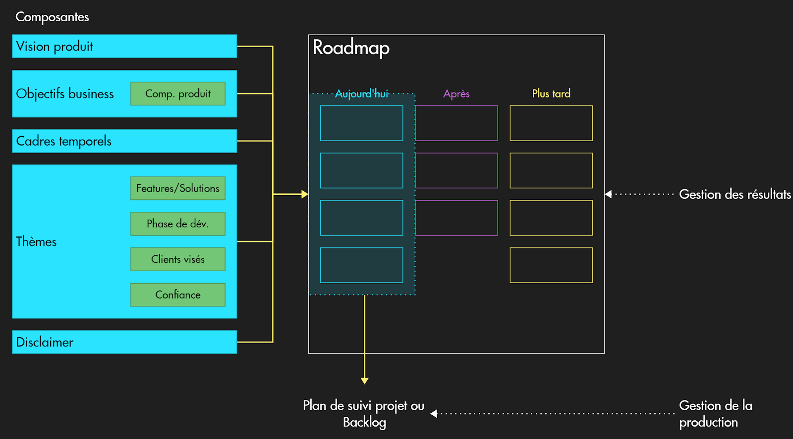

Qu’est-ce qu’une Product Roadmap ?
Pour répondre à cette question complexe, nous proposons une définition inspirée de l’ouvrage incontournable en la matière, Product Roadmaps Relaunched, et avec laquelle nous sommes totalement alignés chez Draft: une Product Roadmap décrit l’itinéraire que vous envisagez de suivre pour réaliser votre vision produit. Elle se concentre sur la valeur que vous souhaitez apporter à vos clients et doit vous permettre d’obtenir le soutien coordonné des parties prenantes à votre projet.”
Comme vous avez pu le remarquer, cette définition met en exergue la valeur apportée aux clients, c'est-à-dire le résultat en matière de satisfaction de leurs besoins ou réponses à leurs problèmes. Là où les solutions peuvent être détaillées et dimensionnées dans un “artefact tactique” telle qu’un backlog ou une roadmap projet (sous forme d’un diagramme de Gantt, par exemple), une Product Roadmap se doit de rester à un niveau d’abstraction stratégique.
L’autre élément clé de cette définition est la vision produit. En effet, la construction d’une roadmap produit est une occasion idéale pour prendre du recul et redéfinir la vue d’ensemble: pour quelles raisons développons-nous ce produit ? Qu’est-ce que nous voulons que cela signifie pour nos clients, notre organisation et pour l’humanité ?
Même si, bien évidemment, les Product Roadmaps peuvent prendre des formes diverses et variées en fonction des organisations et des parties prenantes auxquelles elles doivent être présentées, à travers cet exemple, nous vous proposons un cadre méthodologique que vous pourrez aisément réutiliser et adapter aux spécificités de votre contexte.
Comment construire une Product Roadmap ?
Avant de commencer la construction de votre roadmap produit, il est utile d’investir un peu de temps dans la collecte d’information afin de vous assurer de prendre des décisions éclairées compte tenu de l’environnement dans lequel vous naviguez. Par exemple, vous pouvez profiter de cette phase préliminaire pour actualiser votre connaissance du marché et de l’industrie, affiner votre compréhension des rôles d’utilisateurs et d’acheteurs, retravailler vos personas et recueillir les attentes des parties prenantes.
Ensuite, une fois que vous êtes prêt à construire votre roadmap, vous pouvez appliquer le cadre méthodologique proposé dans l’ouvrage Product Roadmaps Relaunched. Ce cadre propose d’articuler votre Product Roadmap autour de cinq composantes :
- La vision produit, sur laquelle nous allons nous arrêter plus en détail à la section suivante ;
- Les objectifs business, qui puissent être, si possible, mesurables ;
- Un cadre temporel, qui doit rester approximatif afin de ne pas s’enfermer dans la définition minutieuse de jalon compte tenu du caractère incertain de l’environnement et itératif du processus de développement ;
- Des thèmes, nécessaires à la catégorisation des besoins et problèmes clients ;
- Un disclaimer, pour rappeler les aléas inhérents au processus de roadmapping qui s’inscrit dans votre processus Agile itératif.
A ces cinq composantes primaires, vous pouvez ajouter des composantes secondaires optionnelles dans le but d’éclairer davantage les parties prenantes. Par exemple, vous pouvez ajouter des composantes produit pour mieux classer les objectifs business. Aussi, des fonctionnalités haut-niveau ou solutions, un indicateur de stade de développement, un indice de confiance, et des précisions sur les segments clients visés pourront enrichir votre roadmap produit.
Comment déterminer une vision stratégique convaincante ?
La vision est le phare qui permet de se repérer en l’absence de points de repères stables. Elle donne le cap et le sens, et est déployée à tous les niveaux, aussi bien en interne qu’en externe.
La stratégie d’entreprise étant fortement inspirée de la stratégie militaire, il est intéressant de solliciter la science militaire moderne pour obtenir des éléments instructifs et directement exploitables au sujet du concept de vision. Ainsi, pour le Colonel Richard Mackey, professeur à l’U.S. Army War College, dans son essai visionnaire Translating vision into reality: The role of the strategic leader (1992), une vision :
- Est une image mentale explicite ;
- Est communiquée clairement et aisément compréhensible ;
- Suscite un certain excitement auprès des parties prenantes ;
- Crée une énergie et un engagement parmi les collaborateurs ;
- Décrit un état futur cible ;
- S’inscrit dans un certain contexte ;
- Établit/renforce les valeurs de la communauté.
Suggestions de ressources pour maîtriser la construction de roadmap Agile
- Une présentation didactique de Fatima-Zahra Hamil, Coach Produit chez Publicis Sapient, donnée dans le cadre TechAway : Comment construire sa roadmap produit
- Le billet de blog de Judicaël Pacquet intitulé Roadmap produit - définition, exemple”
- Scrum Life, la chaîne YouTube de Jean-Pierre Lambert, Coach Agile, à travers la vidéo Roadmap Agile - Comment réussir l'exercice